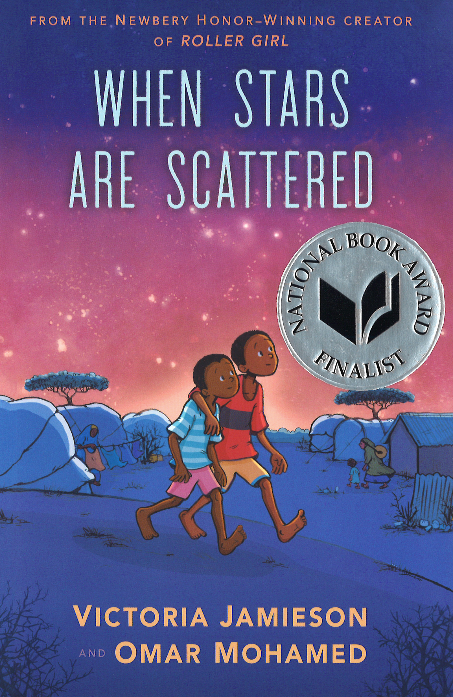

Read about a young boy who—despite almost impossible circumstances—finds the hope and courage to learn, to grow, and to reach his dreams.
“This engaging, heartwarming story does everything one can ask of a book, and then some.”
–Kirkus Reviews, Starred Review
National Book Award Finalist
Hooks
Build Background
Before introducing the Big Question, explore the online links below to build background and make connections to the graphic memoir. Explain that refugees are people who leave their country because of war, violence, or persecution. They leave because it is not safe for them to stay. In When Stars Are Scattered, the narrator Omar is a refugee who has left Somalia and now lives in Dadaab, Kenya. Display a map of Africa and point out Somalia and Kenya; Dadaab is located near the middle of the countries’ border, in Kenya. Preview all links and content before sharing with students.
Share the CNN drone footage of the Dadaab Refugee Camp from 2015. Prior to viewing, tell students to focus on one way Dadaab is similar to and one way it is different from their own neighborhood. Then share responses as a class.
Ask: In what ways is Dadaab like your town or neighborhood? In what ways is it different?
Share the trailer for the book When Stars Are Scattered. Clarify that Omar, the main character in the red shirt, is narrating the story. Prior to viewing, tell students to listen for what Omar “chooses” to do.
Say: Think about how Omar describes his situation. He says, “I didn’t choose to be a refugee, but I’m choosing to believe in a future for my family.” Ask: What does this quote reveal about Omar? What does it mean when he says he’s “choosing to believe in a future”?
Introduce the Big Question
How can hope help us find our way?
Display the Big Question and underline find our way. Brainstorm possible meanings of “find our way,” such as finding a path when you are lost, learning how to navigate something new or challenging, or figuring out how to succeed and reach your goals.
Explain that in When Stars Are Scattered, Omar is a refugee who faces many circumstances that are beyond his control. He barely has what he needs to survive. As he navigates hunger, loss, and cruelty, he wavers between hoping for the “impossible” dream of resettlement and losing hope altogether. Throughout the lesson, guide students to think about how hope helps Omar find his way and how his outlook develops and changes.
Draw and display the continuum diagram with the quotations shown below. Display the diagram throughout the lesson and have the class add quotations from the text along the continuum as they read.
← More Pessimistic ---------------------------------------------- More Optimistic →
Then have students preview the three quotations from the text representing different attitudes toward hope. Have them decide if they usually assume the worst (more pessimistic) or usually
expect the best (more optimistic) and which quotation they agree with most. Have them mark where they are on the continuum diagram and then respond to the following sentence frames in their journals:
The quotation closest to my own beliefs is _____________ . I agree with this quotation because _____________ .
Mirrors & Windows
Three-Step Interview: How can hope help us find our way?
Use the activity below to help students explore and share their understanding of hope, what we can and cannot control in our lives, and how we can find ways to succeed despite difficult circumstances.
Display or provide the following statements. Explain that students will form small groups to interview each other, agree or disagree with the statements, and explain or support their responses.
Statements:
1. Some things will always be out of our control.
2. Working hard in the present will help us succeed in the future.
3. We should always stay positive.
Allow time for group discussion before facilitating a whole-class discussion. See Activity Support for further instructions.
Author’s Craft
Genre: Graphic MemoirWhen Stars Are Scattered combines the memoir genre with the graphic novel format. Explain that this text is a memoir, or the real story of important events in the author’s life. Omar Mohamed told his story of growing up as a refugee to coauthor and graphic novelist Victoria Jamieson, and she recorded the story, drew the pictures, and set it in a graphic novel format. Mohamed and Jamieson worked together to tell Omar Mohamed’s story in a powerful and memorable way, specifically for young readers. Read the Afterword and Authors’ Notes at the back of the book for additional context about the author collaboration and the unique format of the book.
Hold up the book and page through it with students. If there is only one copy, pass the book around the classroom and help students identify features of graphic texts, including panels, frames, speech balloons, and close-ups. Then call attention to the color palette and the depiction of the characters and the Kenyan refugee camp setting.
Features of Graphic Texts
Use the guiding questions to prompt discussion.
Why do you think the authors wrote this memoir in a graphic format? What audience might the format appeal to? (The graphic format is popular with kids, so the authors may have wanted to reach a wider and younger audience. The pictures also might help the audience understand an unfamiliar place or difficult topic.)
What are the panels used for? What purpose do they serve in telling the story? (Each panel focuses on one idea and has one illustration. The panels break up the scene and dialogue and help organize the story.)
What do you notice about the frame? (It contains the panels. There can be several panels in one frame.)
What tells you who is speaking? (the speech balloons)
Why might an author decide to include a close-up? (for example, to show a character’s expression or emotion)
As students read, encourage them to think about how the genre and format help tell this story in a unique and powerful way.
Repetition Remind students of the trailer for When Stars Are Scattered. Display or replay the first two sentences: “In a refugee camp, it feels like all you ever do is wait. Wait for food, wait for water, wait for your life to start.” Ask:What do you notice about the language the narrator uses to describe his situation? Elicit that the word wait is repeated four times. Then use the guiding questions to prompt discussion.
What is the effect of the repetition of the word wait? (It helps emphasize the word wait and the frustration of waiting.)
The narrator uses the word wait to list several things he waits for: “Wait for food, wait for water, wait for your life to start.” The word wait is repeated, but the sentence structure is repeated too* (“Wait for ___ , wait for ___ , wait for ___ .”) How is “waiting for your life to start” different from waiting for food or water? (Water and food are physical needs for survival. Waiting for your life to start is more abstract, like a feeling.)
Why would the authors use the same word and sentence structure to describe all three things? (Using the same word and sentence structure suggests that all three things are similar or equally important. It suggests that feeling like your life can start is just as necessary as having food or water.)
Clarify that authors use repetition to emphasize important words and ideas. Tell students to watch for examples of repetition throughout the text and to think about their effect on the text’s meaning.
*You may want to point out that repeating the same grammatical structure, as done in the second sentence from the trailer, is a special type of repetition called parallelism. Authors often use parallelism to emphasize relationships among ideas.
Summary
Omar and his younger brother Hassan have lived in the Dadaab refugee camp for seven years. They’re separated from their mother, they often go hungry, and there is the constant threat of thieves. Omar plays soccer with his friends and hopes to one day return to Somalia or even get resettled in the United States. Salan, a community worker, encourages Omar to go to school so he is prepared for whatever the future holds, but Omar is torn. He isn’t sure he needs school, and he has always looked after Hassan, who has a disability. When Omar decides to go, he first feels overwhelmed. Yet he realizes that school offers him intellectual stimulation, friendship, future opportunities, and “something to believe in.” (p. 96) But then Hassan runs off and gets hurt, and Omar quits school to care for him. He finds out Maryam’s father has arranged a marriage for her, so she must quit school as well. When Maryam confronts Omar about the opportunity he has—that she does not—he realizes he must make the most of his chance. Omar returns to school and takes his exams.
* See About the Book for potential sensitivity issues.
Hooks
Build Background
Remind students that When Stars Are Scattered tells the experiences of Omar’s childhood as a refugee. He didn’t choose to be a refugee, and like other children, Omar loves playing sports with his friends and has hopes and dreams for his future. Share the links below to help students continue to build background. Preview all links and content before sharing with students.
To support active listening, have students tell how showing faces of real people emphasizes the video’s message. Play the video, and then discuss the following question.
Ask: What is the message of the video? Why do you think this message is important to remember? (The message is that no one chooses to be a refugee; it could happen to anyone.)
Before sharing the video about the 2020 official Refugee Olympic Team, preview with students the meaning of the terms displacement and displaced person. Then have students focus on how sports can inspire hope and connection. According to the video, the Refugee Olympic Team has become a symbol of many things. Prior to viewing, tell students to listen for and record one or two of these symbols. Then discuss the following questions.
Ask: According to the video, what is the Refugee Olympic Team a symbol for? (It is a symbol of hope, for peace over war, for determination in the face of adversity, and of the power of sport.) How might learning a sport teach you skills or lessons that help you in other areas of your life? (Sports teach the importance of perseverance, determination, working together, and never giving up hope; learning these skills can help people deal with many challenges in their lives.)
Mirrors & Windows
Have students share their thoughts about the conflict Omar faces between going to school and staying home to keep Hassan safe. Use the quotations and questions below to help students explore the topic.
After Hassan runs away and gets hurt, Omar says “I’ve been selfish long enough. Obviously I was wrong about school—I need to be with my brother.” (p. 103)
After Omar quits school, Maryam tells him “You have a gift, Omar. You’re smart, and you’re kind. You could help Hassan and other refugees like him—other refugees like me—if you keep going to school. I think you’re being selfish.” (p. 107)
Why does Omar think he's being selfish by going to school?
Why does Maryam think it's selfish for Omar to quit going to school?
Have you ever been in a situation where you thought you were helping someone, but you were holding them back, or vice versa? Explain. (For example, students might recall a time when they were trying to help a friend or younger sibling by doing their schoolwork for them instead of letting them learn.)
Write About It!
Journal After discussing, have students write about what they would do in Omar’s situation–stay home with Hassan or keep going to school. Display the sentence frame to support responses.
If I were in Omar’s situation I would ___________ because ___________ .
*If students need more prompting, you may also provide a student exemplar. Note that some students may feel it is important to stay with Hassan. Accept all responses, as long as students can support their views.
Student Exemplar:
“If I were in Omar’s situation, I would go to school and let trusted friends help with Hassan because it will help him to meet new people and it will help me to stay in school.”
Flexible Group Activities
To maximize student performance, use flexible grouping options that best meet your instructional goals and your students’ needs.
Journal Share
Have students share and discuss their journal entries about what they would do in Omar’s situation.
Revisit the Big Question
Have groups review Part 1 and find additional quotes from the text to add to the continuum diagram. Have groups use the continuum to discuss Omar’s journey and whether he is more optimistic or more pessimistic at this point.
Author’s Craft: Repetition
Have students work in groups or pairs to identify repeated words and discuss the effects of the repetition on the meaning of the text. Directions and resources are included in Activity Support.
Summary
Two years later, Omar is now in middle school, and he and his friends share their dreams for the future. Omar wants to be a social worker to help other refugees. But he and his friends also see the harsh reality of life for most adults at the camp. When Jeri’s dad belittles the students and their dreams, Omar recognizes that his cruelty stems from frustration at his own situation. For most people in the camp, resettlement or even getting a job is nearly impossible. When Omar meets a UN social worker and he and Hassan get an interview for resettlement, Omar believes his dreams might finally be realized. Omar tells the UN his heartbreaking story of how he and Hassan lost their home and parents and came to the camp. After the interview, Omar focuses less on school, thinking his fate is sealed. Yet he hears nothing for months and again begins to lose hope. He becomes jealous and impatient when others are selected for resettlement and takes his anger out on Jeri, Maryam, and even Hassan. Gradually, however, Omar begins to understand that although his situation is unfair and he cannot control his circumstances, “the challenge of life is to make the most out of what you’ve been given.” Gradually, Omar is learning how to find his way by navigating hardship, strengthening his relationships, managing hope, and making the most out of his situation.
* See About the Book for potential sensitivity issues.
Hooks
Make Connections
Share the online video below to help students make deeper connections to the text. Preview all links and content before sharing with students.
Share the introductions from Sagaro, Abdirizak, and Rahma. Prior to viewing, tell students to focus on each person and his or her dreams for the future and think about which person they relate to most.
Ask: In what ways are Sagaro, Abdirizak, and Rahma working for a better future? (Sagaro is working to support himself and his family through business. Abdirizak and Rahma are using their education to help achieve a better future.) Which one of these people do you relate to most? Why?
Mirrors & Windows
After students have read Part 2, have them reflect on how Omar’s relationships are both strained and deepened as he gets closer to—and then seemingly further from—his dream of leaving the camp. Have students explore what he learns from working through these conflicts and how the support of his friends helps him find his way.
In Chapter 14, all that Omar can think about is his hope to get resettled in America. He says, “I slid deeper and deeper into a dark hole. . . . I felt like I had a darkness growing inside me too. It made me feel angry and mean, and I took it out on the people I loved most.” (p. 206)
How does Omar take his anger out on Nimo, Jeri, Maryam, and Hassan?
How does Omar work through his anger with those he cares about?
What does this suggest about Omar’s personal development? (Possible answer: Omar is growing, learning, and becoming more empathetic.)
When have you taken your anger out on someone you cared about? How did you resolve the conflict, and what did you learn from the experience?
Write About It!
Journal Display the sentence frame below and have students write about their experiences.
This reminds me of when I took my anger out on __________ because __________ . We resolved the conflict by __________ . This experience helped me _________ .
*If students need more prompting, you may also provide some student exemplars.
Student Exemplars:
“This reminds me of when I took my anger out on my friend because he made the basketball team, and I didn’t. We resolved the conflict by giving each other space and then talking about it. This experience helped me accept that different people have different strengths, and that’s okay.”
“This reminds me of when I took my anger out on my mom because I was upset about not doing well on a test at school. We resolved the conflict by talking about it. This experience helped me find ways to talk about problems and ask for help instead of staying upset.”
Flexible Group Activities
To maximize student performance, use flexible grouping options that best meet your instructional goals and your students’ needs.
Journal Share
Have students share ideas about how they’ve taken their anger out on someone and what they learned from the experience.
Revisit the Big Question
Have groups review Part 2 and find additional quotes from the text to add to the continuum diagram. Based on the quotes, have groups discuss whether Omar’s journey is more of a straight line or whether it shifts back and forth. Have them decide whether Omar seems more optimistic or pessimistic at this point.
Author’s Craft: Graphic Memoir
Have students work in groups or pairs to identify features of the graphic memoir format and discuss how the authors use these features to help create specific moods, or feelings, in the text. Directions and resources are included in Activity Support.
Summary
Four years later, Omar has refocused on working hard at school and is one of the few students to get into high school. Yet once again he finds himself questioning his future, and at times the familiar feelings of hopelessness creep in. When Omar gets word that he and Hassan are finally being resettled, he is more mature and is careful not to pin all his hopes on something that may not happen. Instead, he stays focused and keeps going to school and caring for his friends and family. He relies on his faith and trusts that if he tries his best, things will work out. He now knows that, regardless of whether he is resettled or not, only he is responsible for his future. As resettlement becomes a reality, Omar faces the difficulty of leaving his friends and loved ones, including the hope of ever finding his mother. But he has grown and learned new ways to understand himself, other people, and the world. He is now able to focus not on what he has lost or is leaving, but on “what he has been given.” Omar’s growth helps him take responsibility for his future and find the courage to take the next step toward achieving his dreams.
* See About the Book for potential sensitivity issues.
Hooks
Make Connections
Tell students they will watch a video about refugees in Dadaab who started their own newspaper to share their stories with their community and the outside world. Have students watch the video and write down something that reminds them of Omar’s memoir and how he shares his story. Preview all links and content before sharing with students.
Note: Video footage includes an image of a man with a facial tumor, which may be difficult to view. (time code: 1:51- 1:56)
After viewing, tell students to think about The Refugee Newspaper and Omar’s memoir, When Stars Are Scattered. Encourage students to refer to the notes they took while viewing the video.
Ask: Why is it important for people to share their stories? How can listening to others’ stories help us find our way in our own lives? (Sharing our stories helps us connect with others. Listening to others’ stories helps us learn about the world, understand different points of view, and learn new ways to deal with challenges.)
Mirrors & Windows
Have students share their thoughts on how Omar responds to leaving his friends and family. Have them consider how he has grown and changed, and what he has learned that helps guide him now. Use the prompts and questions below to help students explore the topic.
Omar has always wanted to leave Dadaab yet wonders why it is so difficult to leave when the time comes. The last line of the book is “I hope that in America, Hassan and I will find our way.” (p. 257) Is “finding one’s way” more about reaching a destination or a continual journey? Explain.
Fatuma always encourages Omar to have faith that things will work out. She says, “A mother wants her children to move on. To lead a better life than herself” and “If you love me…you will leave me.” (p. 244) Tell about a time when you did something challenging on your own but that you knew was the right decision. How did you know it was the right decision?
Give students time to think and jot down ideas before discussing. Be open to a variety of responses and encourage students to explain their thinking.
Write About It!
Journal Display the sentence frame below and have students write about their experiences.
It was difficult when __________ , but I knew it was the right decision because __________ .
*If students need more prompting, you may also provide some student exemplars.
Student Exemplars:
“It was difficult when I stood up to a bully on my own, but I knew it was the right decision because it is important to show that mean behavior is wrong.”
“It was difficult when I traveled alone on an airplane, but I knew it was the right decision because I knew it was important to visit my grandma while I had the chance.”
Flexible Group Activities
To maximize student performance, use flexible grouping options that best meet your instructional goals and your students’ needs.
Analyze Images
Have students focus on the image and text on p. 257. Then have them compare it to the image and text on p. 3. Have students discuss why the authors might want to bookend the story with these images and the text. Ask: How does Maryam’s poem help you understand the image on p. 257?
Revisit the Big Question
Have groups review Part 3 and find an additional quote from the text to add to the continuum diagram. Have groups tell whether they think Omar is fully optimistic or not at the end of the book and explain why or why not.
Unlock a Key Sentence
Display and read aloud the following key sentence from When Stars Are Scattered:
“It is a valiant and agonizing struggle to focus not on what you have lost . . . but on what you have been given.” (p. 254)
Guide students in unlocking the layers of meaning conveyed in the sentence using the protocol included in the Activity Support.
Reflect on the Big Question
How can hope help us find our way?
Display what Omar says at the end of the story: “For me, the first years are lost. I hope that in America, Hassan and I will find our way.” (p. 257) Have students explore what has helped Omar find his way throughout the story. Prompt students with:
How does school help Omar find his way throughout his life? (School gives Omar something to believe in. It helps him build friendships and opens opportunities. It inspires his dream to help other refugees.)
Omar says, “No one chooses to be a refugee” (p. 252), but also “only I could decide what I would make of my life.” (p. 246) How do these statements reflect what Omar has learned about himself and how he navigates life as a refugee? (Omar acknowledges that much of his life is unfair and out of his control. But he also knows that he is not powerless and only he is responsible for his fate.)
How does Omar grow and change as a person? Think about how he overcomes tensions with others, develops empathy, and maintains hope. (Omar understands how frustrating life as a refugee can be, and he learns how to respond with empathy when others lash out. When he feels hopeless, he tries to see things from others’ perspectives. This helps him accept his circumstances, resolve problems, support others, and maintain hope. He also learns to manage hope by working hard to help realize his goals instead of wasting time “hoping for the impossible.” (p. 241))
How might reading Omar’s story help others learn how to navigate difficult circumstances?
Group Activity After discussing the quote and Big Question, have groups focus again on the continuum diagram from Before Reading. Have them add the following quotes along the continuum. Finally, have groups decide where Omar “lands” along the continuum by the end of the book. Is his attitude more pessimistic, more optimistic, more realistic, or a combination? Explain. (Note that responses will vary, but accept all reasonable responses as long as students can support them.)
“You’re about as likely to get chosen to go to America as I am to find that grain of sand again.” (32)
“I guess you just have to appreciate the good parts and make the most out of what you’ve got.” (80)
“All of a sudden, I am so jealous and I want to leave this place so badly, I feel like I am going to explode.” (139)
“Waiting. Waiting. Waiting. How long can you wait before you lose all hope?” (201)
“Sometimes I feel so hopeless in this place, I don’t think I can stand it.” (230)
“Sometimes, when life feels like it’s at its lowest . . . you’ll find a path out of the darkness.” (239)
“The United Nations may decide whether I leave or I stay . . . but only I could decide what I would make of my life.” (246)
“No matter what happened in my future, I was lucky.” (246)
← More Pessimistic ---------------------------------------------- More Optimistic →
Mirrors & Windows
How can hope help us find our way?
Students have reflected on how Omar’s hope as well as his intellectual and personal growth help guide him. Now have them reread the statements from Before Reading and think about how their thoughts have developed or changed after reading the memoir.
1. Some things will always be out of our control.
2. Working hard in the present will help us succeed in the future.
3. We should always stay positive.
Use the guiding questions to prompt discussion:
Has your response for any of the questions changed after reading the memoir? Why?
What part of Omar’s story helps you better understand something in your own life?
In what ways can the memoir deepen our thinking about how people can find their way through difficult circumstances?
Write About It!
Journal Display the sentence frame below and have students write about their thoughts and reflections. Ask: How has your understanding of how hope can help you find your way changed or expanded after reading this memoir?
After reading When Stars Are Scattered, my thinking changed/expanded because ____________ . I used to think ____________ , but now I think ____________ .
Project-Based Learning
How can hope help us find our way?
Have student pairs choose one of the project ideas below. Allow students to choose other project ideas as long as the ideas attempt to answer the Big Question. Then, distribute the Project Template and Project Rubric to students.
Project-Based Learning Ideas
Map a Journey showing Omar and Hassan’s literal journey from Somalia to Dadaab, Kenya, to the United States. Include captions that connect to important points in Omar’s personal journey along the way.
Create a Photo Album that includes 8–10 drawings and captions documenting important people and moments in Omar’s life and how he grows and changes as a result.
Write/Record a News Report or article focusing on Omar’s story and his project to help refugees, Refugee Strong (https://www.refugeestrong.org/).
Project Template
Have students fill out the project template. Assist students in finding resources to guide their project. The Project Template is available to download or assign from the Savvas Now Table of Contents on Savvas Realize.
Project Rubric
Project Rubric Review the 4-Point Project Rubric with students. Discuss each category with students. The Project Rubric is available to download or assign from the Savvas Now Table of Contents on Savvas Realize.
Share & Celebrate
Preparing to Present
Provide time for student pairs to practice their presentations, reminding students that each partner should have a significant role in presenting their project. Partners should work collaboratively and follow agreed upon rules, norms, and protocols. Review the 4-Point Project Rubric with students so they understand how they will be assessed.
Explain that students can strengthen their presentations by incorporating different types of media, such as photographs, drawings, and videos. Model how to present orally.
When I present, I make eye contact with the audience. I don’t keep my eyes down.
As I speak, I make sure everyone in the room can hear what I am saying.
I pronounce each of my words clearly and correctly.
I do not rush through my presentation but speak clearly and at a natural pace.

Title: When Stars Are Scattered
Author: Victoria Jamieson and Omar Mohamed
Color: Iman Geddy
Genre: Graphic Memoir
Lexile: GN530L
Page Count: 264
Publisher: Dial Books
Copyright: 2020
Text Also Includes:
Afterword
Author Notes
Plot Overview
When war broke out in Somalia, Omar and his brother Hassan lost their home and parents. They are now growing up in Dadaab, a crowded refugee camp in Kenya. Life in the camp is exceptionally difficult. Omar feels abandoned by his mother, never has enough food, and worries he may never leave Dadaab.
When Omar gets the opportunity to attend school, he hesitates. His younger brother Hassan has a disability and struggles to communicate. Omar is torn between taking care of Hassan and the chance to give them both a better life. Omar finally decides to attend school, and while it is challenging, his world and opportunities expand.
When Omar gets a UN interview, his dream of resettlement seems close. But after months of waiting, and with his friendships strained, his future remains uncertain, and he starts to lose hope. Yet gradually Omar begins to accept what he cannot control and focus on what he can. He immerses himself in his studies and recognizes that only he can decide what to make of his life. When Omar and Hassan are eventually selected for resettlement, Omar has gained a new understanding of himself, the world, and his ability to succeed despite his circumstances.
Theme Overview
Managing Hope An important theme in When Stars Are Scattered is managing hope. In Dadaab, Omar must navigate almost impossible challenges—the lack of food, the loss of his parents, and the cruelty of some people in the camp. It’s easy to lose hope or to pin all of one’s hopes on unrealistic dreams. Omar knows that much in his life is out of his control, but he learns ways to maintain hope for the future while also working hard in the present to prepare himself for whatever the future may bring. Fatuma helps Omar develop his faith. School helps him develop skills and believe he may have a better future. Deep friendships provide support. Omar gradually learns to focus on what he can control and to make the best of his situation. Hope helps Omar believe things will work out, but hope bolstered by hard work, faith, and support helps Omar make his belief a reality.
Sensitivity Issues
Food Insecurity Getting enough food is a constant challenge for Omar, Hassan, and most people in the refugee camp, particularly when Omar is a young boy. In Part 1, Omar describes food distribution, using ration cards, and instances when he and Hassan—as well as most of his community—run out of food and are forced to go hungry. (pp. 15, 60–64)
Abandonment Throughout Part 1 especially, Omar thinks his mother may still be alive, and he often searches for her at the market. At times, he feels deep despair wondering if she could have abandoned him and Hassan. (pp. 66–67, 93–94)
Mistreatment of People with Disabilities Throughout the text, there are some instances of Hassan and Jeri being bullied due to their disabilities. (pp. 76–80, 102–103, 126–127, 201) In addition, Jeri and Maryam help Omar recognize that he, however well-intentioned, might be underestimating Hassan because of his disability.
Arranged Marriage There is discussion of arranged marriage throughout the text. Maryam, Omar’s friend and a top student in their class, must leave school for an arranged marriage. While the topic is sensitive, the nuanced depiction in the text offers insight into the difficult choices refugee families face and the additional barriers to education that threaten girls’ futures.
Religious References Throughout the memoir, there are references to God and prayer in the refugee camp. In Chapter 9, there are specific references to the Somali community’s Islamic faith rituals and the celebration of Ramadan and Eid al-Fitr in the camp.
Suicide/Despair On p. 138, there is a brief mention of suicide. (“I heard about one guy…his case was rejected by the UN and he couldn’t handle it. He . . . he killed himself.”) Throughout the story, Omar and others face feelings of hopelessness at times.
Violence In Chapter 12, Omar recounts the traumatic story of his past, when his father is killed, his home is destroyed, and he and Hassan are separated from their mother. Images include men with guns, burning homes, mounds suggesting graves along the journey, and a hospital scene where Omar and Hassan are very sick. Be especially mindful if any of your students have experienced similar trauma.
Disclaimer
By clicking the highlighted text, you will be leaving the Savvas NOW Program to enter
into
an external website that may contain content or resources for adults. Savvas does not
guarantee, approve or endorse the content, resources or products available at these
websites, nor does a link indicate any association with or endorsement by the linked
website
to Savvas Learning Company LLC. The linked website has its own legal terms and policies,
including a privacy policy and community guidelines. We recommend that you review any
terms
of use and all policies and guidelines of such websites before supplying information to
or
otherwise using those websites or their products and services. We at Savvas Learning
Company
LLC do not control these third party websites and are not responsible or liable for the
performance of these websites, their services or any of the content and resources
contained
on them.
Activity Support
Three-Step Interview: How can hope help us find our way?
The Three-Step Interview activity asks students to reflect on their beliefs about finding our way despite circumstances that are out of our control. Use this activity as a warm-up for exploring the theme in When Stars Are Scattered.
1. Display or distribute the statements to students. Clarify any statements as needed and remind students that they’ll need to agree or disagree with each statement and explain why. Interviewers should take notes so they can share responses. Provide sentence frames such as: I agree/disagree with this because___________ .
2. Place students into groups of four. Assign each group member a letter (A, B, C, D).
3. Have the groups of four complete the three-step interview as follows:
Step 1: A interviews B; C interviews D.
Step 2: B interviews A; D interviews C.
Step 3: Members of the group then share the information they learned from the person they interviewed.
4. Give students time to interview and share responses in their groups. Then confer as a class. First, tally the number of agrees or disagrees for each statement. Then, have students share specific explanations from their group. Encourage a variety of explanations. If most students share a particular view, provide counterpoints to probe other perspectives. Finally, summarize the discussion.
Activity Support
Author’s Craft: Repetition
In this activity, students work together to identify repeated words and discuss how repetition helps convey characters’ feelings.
Follow the steps:
1. Display the following passage from pp. 66–67, where Omar thinks he sees his mother at the market. If possible, display the book so students can see the layout of text and art as well.
I can’t believe I thought it was her. I’m so stupid.
It’s stupid to keep looking for her. Pointless. If she were in this camp, she’d have found us by now. If she were alive anywhere, she’d have found us. A mom wouldn’t abandon her kids.
Would she?
I wish there weren’t so much time to think in a refugee camp. But I have nothing to do today but wait…wait…wait.
I try to forget. I want to forget. Stupid. Stupid. Stupid.
2. Using the chart, have pairs or groups of students locate and discuss 2–3 examples of repetition from the passage. Then have them tell what the repetition reveals about Omar’s experience and feelings. Provide the first response below as a model.
Repeated Word or Phrase
How many times is the word/phrase repeated?
What does the repetition reveal about Omar’s feelings?
“she’d have found us by now”
“she’d have found us”
2 times
Repeating “she’d have found us” reveals Omar is frustrated that his mom hasn’t found them.
3. Then have groups or pairs share and discuss the author’s use of repetition. Provide sentence frames to support discussion.
The word/phrase __________ was repeated __________ times.
This repetition reveals __________ .
Possible Answers:
Repeated Word or Phrase
How many times is the word/phrase repeated?
What does the repetition reveal about Omar’s feelings?
“she’d have found us by now”
“she’d have found us”
2 times
Repeating “she’d have found us” shows Omar is frustrated that his mom hasn’t found them.
“wait…wait…wait.”
3 times
Repeating “wait…” shows Omar’s feeling of the boredom of always waiting.
“I try to forget.”
“I want to forget.”
2 times
Repeating “to forget” shows Omar’s feeling that it would be best to forget about his mom.
“I’m so stupid.” “It’s stupid to keep looking for her.” “Stupid. Stupid. Stupid.”
5 times
Repeating “stupid” shows Omar’s anger at himself and that he thinks finding his mom is hopeless.
Activity Support
Setting Switch
Ask the following questions to support and guide discussion:
What are some details from the story that are specific to the setting of Bangladesh?
(the rickshaw, Mother’s gold bangle, etc.)
If Rickshaw Girl took place in a different country, city, or town, how might these
details change? (instead of a rickshaw, the father might drive a taxi)
How might this change the plot?
Activity Support
Author’s Craft: Graphic Memoir
In this activity, students work together to identify features of graphic memoirs and discuss how these features help create mood.
Follow the steps:
1. Display or have students page through the section where Omar tells the UN worker what he remembers about leaving Somalia (pp. 177–194). Have students focus on the following questions as they think about the graphic features:
How are the pages and panels organized? What do the panels focus on? What do they leave out?
What colors or shades are used?
How do the pictures help fill in what the words don’t tell?
Does the page or panel help show an important change in the story? How?
2. Then, using the chart below, have pairs or groups of students record details about the graphic features on pp. 190–191.
Focus
Details (Graphic Features)
What is the effect on the mood of the story?
organization/ focus
color/shades
what pictures reveal
change shown?
3. After they complete their charts, have groups or pairs share their findings with the class and record responses on the board.
4. Finally, have students choose one or two panels from anywhere in the text and redraw them to show a different mood. They may change the colors, the focus, and what is shown (or not shown) in the frame, for example. Then share the panels as a class and discuss the new mood and how it is conveyed.
Possible Answers:
Focus
Details (Graphic Features)
What is the effect on the mood of the story?
organization/ focus
- many close-ups from young Omar’s perspective
- don’t always show the full picture
- adds to the feeling of anxiety and confusion
color/shades
- pale yellows/browns in this section
- colors are dull (not vibrant like elsewhere)
- adds to the sad, serious mood
- “yellowed” like old papers/photos, suggests the past
- hazy/smoky effect suggests things are unclear and confusing
what pictures reveal
- panel on p. 183 shows Omar watching his village on fire, but words don’t tell what happened
- overwhelming, painful mood
- too much for words
change shown?
- yes; dull yellow/brown colors in this section are a change from the brighter colors in the main story
- helps shift the mood to reflect the painful past
Activity Support
Unlock a Key Sentence
Display and read aloud the key sentence. Then guide students in unlocking its meaning by discussing each sentence chunk using the protocol described below.
Start with the sentence chunk that tells who or what the sentence is mostly about. Continue to unpack meaning and connect ideas, chunk by chunk, using the guiding questions in the table below..
“It is a valiant and agonizing struggle | to focus. | not on what you have lost . . . but | on what you have been given.”
Sentence Chunk
Discuss Meaning
It is a valiant and agonizing struggle
-What is this sentence mostly about? (a struggle) -What is a struggle? (a challenge, difficulty, or fight) -What kind of struggle is it? (valiant and agonizing) -What does valiant mean? Point out the Spanish cognate valiant for Spanish-speaking students. (brave, heroic) -What does agonizing mean? (painful, difficult) -What does it mean if a struggle is both valiant and agonizing? (It is difficult but heroic; it is worth the challenge.)
to focus
-What does to focus mean? (pay attention to, concentrate on) -What does the sentence say to focus on? (We don’t know yet; let’s look in the next chunks.)
on what you have been given
-What does this chunk tell us about “focus”? (This is what to focus on: what you have been given.) -What kinds of “gifts” might the authors want people to focus on? (gifts such as love, kindness, faith, school, and support from friends and family)
not on what you have lost…but
-What does this chunk tell us about “focus”? (This is what not to focus on: what you have lost.) -Why might a refugee focus on what he or she has lost? (Refugees often lose so much: their homes, family members, friends, school, jobs, and toys and other belongings. It can be hard to focus on anything else.) -How do not and but work together in this sentence? (They show a contrasting relationship between two ideas: not this, but that.) -What ideas are being contrasted in this sentence? (Ideas about what to focus on: not what you have lost but what you have been given.)
-Why might this be a good message for everyone to focus on? (It helps us to appreciate what we have and not dwell on what we do not.)
After unlocking the key sentence, have students craft their own sentence using the following sentence frame:
It is a/an __________ struggle to focus not on __________ but on __________ .
Project Template
Name:
Book Title:
Big Question:
Project Description:
Resources:
List the resources you used to complete your project.
Big Question Connection:
Write two to three sentences explaining how your project addresses
the
Big
Question.
Reflection:
Think about the book’s characters, setting, and plot. How was this
book a
mirror for
you? How was it a window?
This text was a mirror for me because ...
This text was a window for me because ...
How might your project be a mirror or a window for others?
My project might be a fill in the blank
lines_________ (mirror/window) for others because...
Project Rubric
4-Point Project Rubric
Score
Focus
Organization
Visuals/Media
Language
Delivery
4
The topic is clear, convincing, and effectively addresses the Big Question
Ideas are clear and well organized.
Visuals/media are engaging, appealing, and effectively support ideas presented.
Language is clear and precise. Vocabulary is specific and appropriate.
Presenter employs appropriate eye contact, speaking rate, and enunciation.
3
The topic is mostly clear and sufficiently addresses the Big Question.
Ideas are mostly clear and well organized.
Visuals/media are mostly engaging, appealing, and support ideas presented.
Language is mostly clear and includes appropriate vocabulary.
Presenter employs mostly appropriate eye contact, speaking rate, and enunciation.
2
The topic is not always clear and only partially addresses the Big Question.
Ideas are sometimes confusing and not well organized.
Visuals/media are not always engaging and only partially support ideas presented.
Language is often vague and/or unclear. Vocabulary is overly general.
Eye contact, speaking rate, and enunciation are uneven.
1
The topic is confusing and unrelated to the Big Question.
Ideas are confusing and unorganized.
Visuals/media are not engaging and/or do not support ideas presented.
Language is vague and unclear. Vocabulary may be used incorrectly.
There is little command of presentation skills.
0
Response is unintelligible, illegible, and off topic or no response is given.
Response is unintelligible, illegible, and off topic or no response is given.
Visuals/media are unintelligible, illegible, and off topic or not included.
Response is unintelligible, illegible, and off topic or no response is given.
Presentation is unintelligible, off topic, or not delivered.